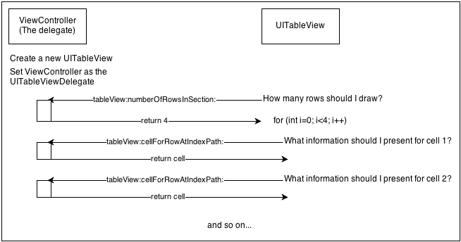

iOS Design Patterns 的阅读笔记。
正文
这篇 blog 是我对原文阅读后的整理，推荐去阅读完整原文：iOS Design Patterns。
原文中例子代码使用 Objective-C，但我使用 Swift 来实现，加深对 Swift 的掌握。Swift 例子下载
MVC
- Model: The object that holds your application data and defines how to manipulate it. For example, in your application the Model is your Album class.
- View: The objects that are in charge of the visual representation of the Model and the controls the user can interact with; basically, all the UIViews and their subclasses. In your application the View is represented by your AlbumView class.
- Controller: The controller is the mediator that coordinates all the work. It accesses the data from the model and displays it with the views, listens to events and manipulates the data as necessary. Can you guess which class is your controller? That’s right: ViewController.

MVC 的概念很短，但是实际应用起来需要很多设计模式支撑运行，原文介绍了许多 iOS 中重要的设计模式，例如 category 和 delegate，KVO 等等。
Facade design pattern
Facade design pattern 暴露统一的接口，背后隐藏着复杂的子类，接口调用者完全不需要知道接口内部的实现，要做的只有传递参数和获取数据。
原文：The Facade design pattern provides a single interface to a complex subsystem. Instead of exposing the user to a set of classes and their APIs, you only expose one simple unified API.
This pattern is ideal when working with a large number of classes, particularly when they are complicated to use or difficult to understand.

The Adapter Pattern
Adapter Pattern 使拥有不同接口的类共同工作。
原文：An Adapter allows classes with incompatible interfaces to work together.It wraps itself around an object and exposes a standard interface to interact with that object.
Apple 的实现方式是通过 protocol ，例如 NSCopying 协议，任何类都可以通过实现这个协议从而提供标准的 copy 方法。
下面的章节 Delegation 中有一个例子演示 protocol 如何协调不同的类共同工作。
The Decorator Design Pattern
Decorator pattern 是一种可以将行为和职责动态添加到对象中而不需要修改源代码的模式。
有两种常用的方式实现 Decorator Pattern: Category 和 Delegation
The Decorator pattern dynamically adds behaviors and responsibilities to an object without modifying its code. It’s an alternative to subclassing where you modify a class’ behavior by wrapping it with another object.
In Objective-C there are two very common implementations of this pattern: Category and Delegation.
Category
Category 是一个强大的拓展机制，允许你添加方法到已有的类中而不用修改类的源代码，它不是使用继承的方法实现。
在 Category 中的方法与其他方法的使用方式是一样的。Category 与 decorator pattern 的所描述的类定义略有不同，因为不能在 Category 中定义属性。
创建方式
在 Objective-C 中，可以直接在 Xcode 的 File 菜单中：“New－>File－>Objective-C File－>File Type 选择 Category” 创建 category，Xcode 会自动生成文件名 classname+categoryname.oc。
在 swfit 中，使用 extension 实现 Category，Category 文件名称也与 Objective-C 一样 classname+categoryname.swift
我们在 extension 中定义了一个方法，前缀是 tr_，代表 TableRepresentation。需要注意 extension 中的方法名称，如果跟你说拓展的类或父类名称发生冲突，那么在程序运行时使用该方法时会出现 undefined 错误。可能在你自己的类中使用没问题，当如果方法名称与标准的 Cocoa 或 Cocoa Touch 类的名称重复则有可能会对其它框架造成很大的影响。
Delegation
Decorator design pattern 的另一个实现方式是 Delegation，可以使一个对象的行为暴露给另一个对象实现。例如使用 UITableView 时必须实现 tableView:numberOfRowInSection: 设置表格 section 数量。
例如下图 UITableView 与 delegation 工作的过程。

类可以通过协议获取需要实现的 Delegation。
添加协议后，协议定义有要求一定要实现的方法，如果没有实现则会出现错误：
ViewController.swift:11:1: Type 'ViewController' does not conform to protocol 'UITableViewDataSource'
协议还定义了可选的 Delegation，swift 中使用 optional 声明：
1 | optional func numberOfSectionsInTableView(tableView: UITableView) -> Int // Default is 1 if not implemented |
实践说明
作者给出了一个例子 HorizontalScroller 详细说明了如何通过 Delegation 创建一个与数据分离的和可重用的滚动视图。
在自定义视图 HorizontalScroller 中
下面会说明 HorizontalScroller 如何通过 delegate 获取数据，和如何定义协议。
这里是 HorizontalScroller 类的一部分代码：
1 |
|
上面定义了一个协议 HorizontalScrollerDelegate，协议声明了三个必需实现的方法和一个可选实现的方法。
该协议是从 NSObjectProtocol 继承的，所以可以通过 NSObject 中的定义发送消息到 HorizontalScroller 的 delegate 中，例如 func horizontalScroller(scroller:HorizontalScroller,clickedViewIndex:Int) 就是由 HorizontalScroller 发出点击事件通知 ViewController 进行处理。
注意在 HorizontalScroller 的实现中定义了一个 delegate：
1 | //在 HorizontalScroller 中定义 delegate |
这个属性是用来执行相关的 Delegate 操作，下面代码就用到了这个属性：
1 |
|
这里就是 HorizontalScroller 大部分关于 delegate 的操作了，配合 ViewController 继续了解 delegate。
在 ViewController 中
ViewController 的一部分代码：
1 | class ViewController:UIViewController,UITableViewDelegate,UITableViewDataSource,HorizontalScrollerDelegate |
首先是在 viewDidLoad 中有一行 scroller.delegate = self，如果把这一行注释了，那么就算类没有实现 HorizontalScrollerDelegate 协议的委托方法程序也能编译，但是运行结果当然是什么都看不到了。因为在 HorizontalScroller 的 reload 方法中有这样一个判断：
1 | func reload() |
scroller.delegate = self 的作用是将 ViewController 类分配给 HorizontalScroller 的 delegate 属性。我们注意到 self.delegate 需要的类型是 HorizontalScrollerDelegate，与 ViewController 类的类型不一致，那为什么 ViewController 可以分配给它呢？因为 ViewController 实现了 HorizontalScrollerDelegate 协议：
1 | class ViewController:UIViewController,UITableViewDelegate,UITableViewDataSource,HorizontalScrollerDelegate |
一旦将 HorizontalScrollerDelegate 协议注释掉后会出现错误：
Cannot assign a value of type 'ViewController' to a value of type 'HorizontalScrollerDelegate!'
因为 ViewController 声明了它会实现 HorizontalScrollerDelegate 协议，所以它必须实现协议指定的方法：
1 |
|
总结：
自定义类 HorizontalScroller 可以使用 delegate 向协议实现者索取数据，实现数据分离。
自定义类 HorizontalScroller 可以使用 delegate 向协议实现者发送消息，协议需要从 NSObject 继承。
自定义类中可以使用 self.delegate?.respondsToSelector(“Method”) 进行判断是否拥有该方法，实现可选的 optional 方法。
The Observer Pattern
在 Observer pattern 中，对象在它的状态改变时通知其它对象，该对象不需要知道哪些对象会被通知，这种设计是为了解藕。最常见的地方是在属性值发生更改后通知其它感兴趣的对象。
Cocoa 使用两种方式实现 Observer Pattern：Notifications 和 Key-Value Observing(KVO)。
Notifications
注意 Notifications 不是 Push 或 Local 推送通知。Notifications 是一种基于 “订阅者-发布者” 的模型，允许一个对象(发布者) 发送消息到另一个对象(订阅者)。发布者永远不需要知道任何关于订阅者的信息。
Notifications 在 Apple 生态中大量使用，例如当键盘隐藏或显示时，系统会分别发送 UIKeyboardWillShowNotification 和 UIKeyboardWillHideNotification。你也可以在工程目录的 UIApplication 中看到超过 20 个由系统发送的消息。
使用方式
下面用一个加载图片的例子演示 Notifications，需要加载图片时就发送通知，然后有通知接收者进行处理
在 AlbumView 的 init 方法中发送 BLDownloadImageNotification 消息，通知消息接收者进行下载图片操作。userInfo 是附加参数，把需要加载图片的 UIImageView 传递进去，另外一个参数 URL 当没有本地缓存时作为图片的网络地址。
1 | NSNotificationCenter.defaultCenter().postNotificationName("BLDownloadImageNotification", object: self, userInfo: ["imageView":coverImage,"coverUrl":ablumCover]) |
在 LibraryAPI 的 init 方法中注册成订阅者接收通知，用 downloadImage 方法处理通知，进行图片下载。
1 | NSNotificationCenter.defaultCenter().addObserver(self, selector: "downloadImage:", name: "BLDownloadImageNotification", object: nil) |
downloadImage 方法的实现：
1 | func downloadImage(notification:NSNotification){ |
Key-Value Observing(KVO)
在 KVO 模式中，一个对象可以在另一个特定的属性发生改变时获得通知，无论这个属性是自己的或则是其其它对象的。
更加深入学习的资料：Apple’s KVO Programming Guide。
Apple 文档中介绍了在 Swift 中使用 KVO 的方法：Using Swift with Cocoa and Objective-C。
使用方式
上面给出了 Apple 官方的使用例子，这里的例子是原文作者中的例子。
Swift 中需要使用 dynamic，这里是 dynamic 的详细介绍
1 | //在 AlbumView.swift 中 |
The Memento Pattern
Memento Pattern 将对象的状态捕获并存放在外部，换句话说，它将应用程序状态保存在其它地方。以便将来状态可以在程序中重新恢复。
使用方式
可以使用 NSUserDefault 实现 Memento Pattern。
NSUSerDefault 适合保存少量数据，下面是使用 NSUSerDefault 处理数据两个函数：
1 |
|
需要读取状态时在 ViewController 的 viewDidLoad 调用 self.loadPreviousState()。
当程序进入 background 时会发出这个消息 UIApplicationDidEnterBackgroundNotification，使用 NSNotification 注册观察 UIApplicationDidEnterBackgroundNotification ，在处理方法中进行状态保存。
在 ViewDidLoad 添加：
1 |
|
这时在模拟器按下两次 Command+Shift+H 杀死应用程序后再次打开，显示了想要的效果，但是封面图片却始终显示第一张。这是因为滚动视图的协议中提供了可选方法 initialViewIndexForHorizontalScroller，如果没有实现这个方法则初始化时始终显示第一张。下面在 ViewController 实现这个方法：
1 | func initialViewIndexForHorizontalScroller(scroller: HorizontalScroller) -> NSInteger { |
这样滚动视图的图片也显示正确了。
Archiving
Apple 指定的另一种实现 Memento pattern 的方式是 Archiving。它将对象转换为 stream 使其得以保存并重新恢复，而且不用将对象的私有属性暴露给外部方法。更多的细节可以阅读 iOS 6 by Tutorials 中第十六章。或者 Apple’s Archives and Serializations Programming Guide。
使用 Archiving
首先需要 Model 中的 Album 类实现 NSCoding 协议：
encodeWithCoder 是必须实现的 delegate 方法，另外添加了一个初始化方法通过特定数据初始化 Album 类。1
2
3
4
5
6
7
8
9
10
11
12
13
14
15
16
17
18
19
20
21
22
23
24
25
26
27
28
29
30
31
32
33
34
35
36
37
38
39
40
41
42
43
44
45
46
47
48
49
50
51
52
53
54
55
56
57
58
59
60
61
62
63
64
65
66class Album: NSObject,NSCoding {
...
//MARK:conform NSCoding
func encodeWithCoder(aCoder: NSCoder) {
aCoder.encodeObject(self.year, forKey: "year")
aCoder.encodeObject(self.title, forKey: "album")
aCoder.encodeObject(self.artist, forKey: "artist")
aCoder.encodeObject(self.coverUrl, forKey: "cover_url")
aCoder.encodeObject(self.genre, forKey: "genre")
}
required init(coder aDecoder: NSCoder) {
year = aDecoder.decodeObjectForKey("year") as! String
title = aDecoder.decodeObjectForKey("title") as! String
artist = aDecoder.decodeObjectForKey("artist") as! String
coverUrl = aDecoder.decodeObjectForKey("coverUrl") as! String
genre = aDecoder.decodeObjectForKey("genre") as! String
}
...
}
```
接着在应用程序保存持久数据的类 PersistencyManager.swift 中添加方法将数据保存成文件：
```swift
//MARK:Archiving
func saveAlbums()
{
var filename:String = NSHomeDirectory() + "/Documents/albums.bin"
var data = NSKeyedArchiver.archivedDataWithRootObject(albums)
data.writeToFile(filename, atomically: true)
}
```
修改 PersistencyManager.swift 的 init 方法：
如果制定路径保存了数据，则直接加载，否则指定固定的数据。
```swift
override init(){
super.init()
if let data = NSData(contentsOfFile: NSHomeDirectory()+"/Documents/albums.bin")
{
if let archivingData: AnyObject = NSKeyedUnarchiver.unarchiveObjectWithData(data)
{
albums = archivingData as! NSMutableArray
println("success")
}else{
println("unarchivie fail")
}
}else{
albums = NSMutableArray(array: [
Album(title: "Best of Bowie", artist: "David bowie", coverUrl: "http://www.coversproject.com/static/thumbs/album/album_david%20bowie_best%20of%20bowie.png", year: "1992"),
Album(title: "It's My Life", artist: "No Doubt", coverUrl: "http://www.coversproject.com/static/thumbs/album/album_no%20doubt_its%20my%20life%20%20bathwater.png", year: "2003"),
Album(title: "Nothing Like The Sun", artist: "String", coverUrl: "http://www.coversproject.com/static/thumbs/album/album_sting_nothing%20like%20the%20sun.png", year: "1999"),
Album(title: "Staring at the Sun", artist: "U2", coverUrl: "http://www.coversproject.com/static/thumbs/album/album_u2_staring%20at%20the%20sun.png", year: "2000"),
Album(title: "American Pie", artist: "Madonna", coverUrl: "http://www.coversproject.com/static/thumbs/album/album_madonna_american%20pie.png", year: "2000"),
])
self.saveAlbums()
}
}
如果还想进一步完善数据保存，在程序每次进入 background 时保存，那么在 LibraryAPI 中添加一个保存方法：
1 | //MARK:archiving |
然后在 ViewController.swift 中的方法 saveCurrentState 中添加：
1 | func saveCurrentState() |
这样应用程序每次进入 background 时就会保存当前数据。
The Command Pattern
Command Design pattern 将操作请求封装成对象，这个对象包括一系列方法，和相应的函数。封装后的对象可以立即执行，也可以稍后执行。你也可以传递这些对象或者动态修改对象或把对象存储起来。
我们可以对封装后的对象执行这些操作：对象之间传递，存储，动态修改，放置到队列中。
可以在 Apple 的文档 Target-Action 了解更详细的资料。
Objective-C 中使用 Target-Action 和 Invocation 实现这个机制。实现 Invocation 的是 NSInvocation 类，该类包含了目标对象，指定方法和方法所需要的参数。NSInvocation 对象可以动态更改并且在需要的时候执行。
但是在 Swift 中 NSInvocation 已经不可使用，所以需要用另外的方式实现。
实现方式
例子中以一个撤销功能演示 Command Pattern，具体思路是在删除专辑时把指定的添加请求保存到 UNDO 堆栈中，当需要撤销时，直接执行 UNDO 堆栈中所保存的指令。
下面是程序实现方式：
首先创建一个工具栏，并在上面放置撤销按钮和删除按钮，然后把工具栏放在应用程序底部：
1 |
|
然后是执行撤销的操作，配置相应的方法：
1 | //添加专辑函数，拥有这个函数才可以恢复已删除的 |
其它
Objective-C 私有变量
1 | @implementation AlbumView { UIImageView *coverImage; UIActivityIndicatorView *indicator; } |
Note: Wondering why the private variables were defined in the implementation file and not in the interface file? This is because no class outside the AlbumView class needs to know of the existence of these variables since they are used only in the implementation of the class’s internal functionality. This convention is extremely important if you’re creating a library or framework for other developers to use.
swift 中的 singleton，init
1 |
|